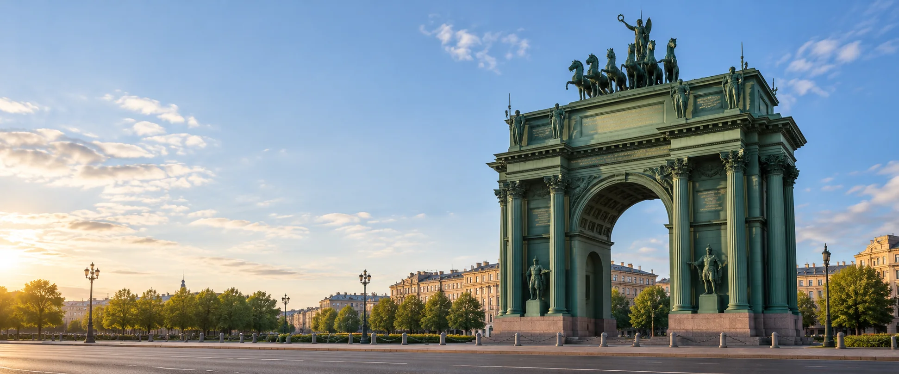

Подростково-молодёжный клуб
Алые паруса
ул. Новостроек, д. 15
Смотреть клуб
Бесплатные возможности для молодёжи 14-35 лет
Клубы, студии и молодёжные пространства ПМЦ «Кировский». Выбери площадку по адресу или интересу.
Смотреть площадкиКаталог района
Ищи по названию, адресу или занятию. Можно выбрать направление.
Показано 19 площадок
В карточке есть направления, адрес, контакт и ссылка на источник.
Загружаем карту клубов…
Предварительные координаты: © OpenStreetMap contributors.
ул. Новостроек, д. 15
Смотреть клубул. Лёни Голикова, д. 82
Смотреть клубпр. Ветеранов, д. 16
Смотреть площадкуул. Краснопутиловская, д. 19
Смотреть клубпр. Ветеранов, д. 53/56
Смотреть клубКанонерский остров, д. 11
Смотреть клубДачный пр., д. 13
Смотреть клубЛенинский пр., д. 137
Смотреть клубул. Морской Пехоты, д. 6/1
Смотреть площадкуул. Стойкости, д. 8
Смотреть клубпр. Маршала Жукова, д. 60/1
Смотреть клубпр. Народного Ополчения, д. 115
Смотреть клубул. Лёни Голикова, д. 27
Смотреть клубул. Губина, д. 5
Смотреть площадкуул. Солдата Корзуна, д. 40
Смотреть клубул. Счастливая, д. 17
Смотреть клубКанонерский остров, д. 20
Смотреть площадкупр. Стачек, д. 67
Смотреть клубул. Подводника Кузьмина, д. 26
Смотреть клубПодходящих площадок не найдено. Попробуй другой запрос.
Контакты ПМЦ
Можно позвонить в центр или связаться с клубом по номеру из его карточки.
Учреждение района
пр. Народного Ополчения, д. 3
Перед первым занятием
ПМЦ сообщает о бесплатных секциях для молодёжи 14-35 лет. Условия конкретной группы проверь перед визитом.
Узнай возраст участников группы.
Проверь дни, время и наличие мест.
Узнай, как присоединиться.
Для спорта уточни требования к здоровью.
Перечень площадок, адреса и контакты: сайт ПМЦ «Кировский». Дополнительный источник по направлениям: городской PDF, загружен 01.06.2026.
На главной странице ПМЦ указано 20 подразделений, а в разделе «Наши клубы» перечислено 19. Состав и отдельные контакты в PDF отличаются от списка на сайте ПМЦ. В каталоге использован список сайта; детали и действующий набор уточняй у центра.